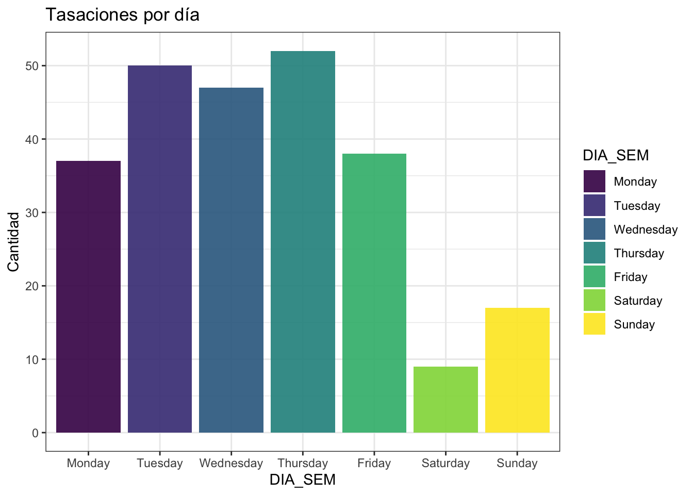
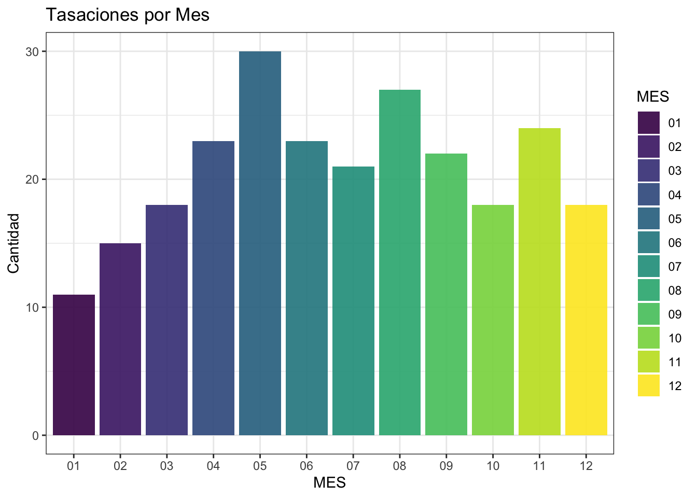
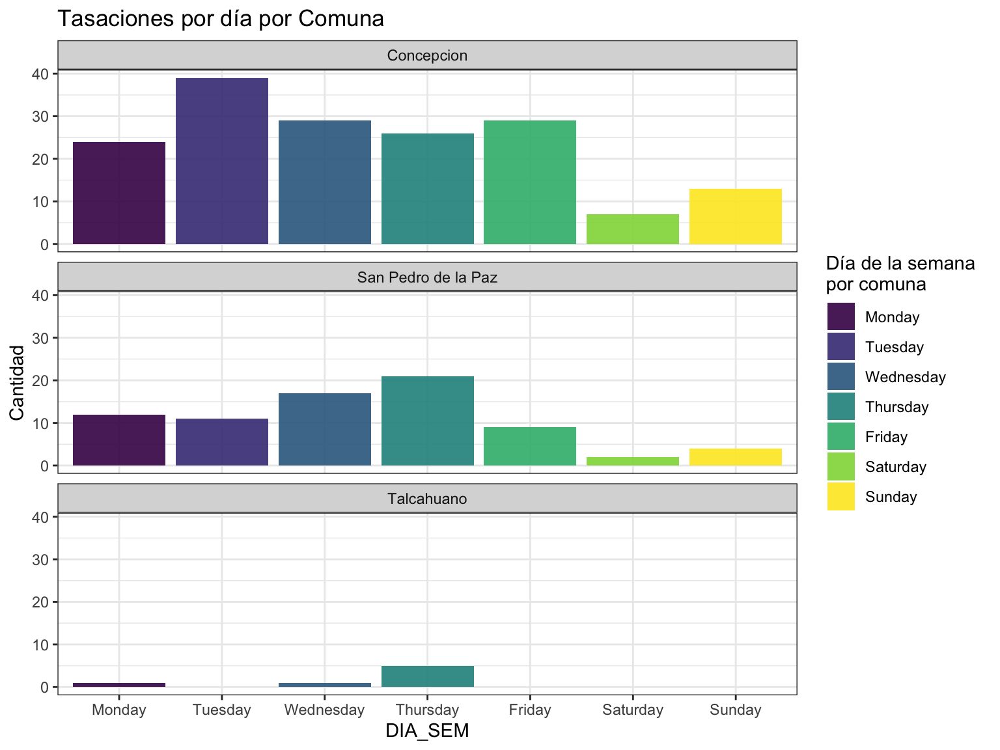
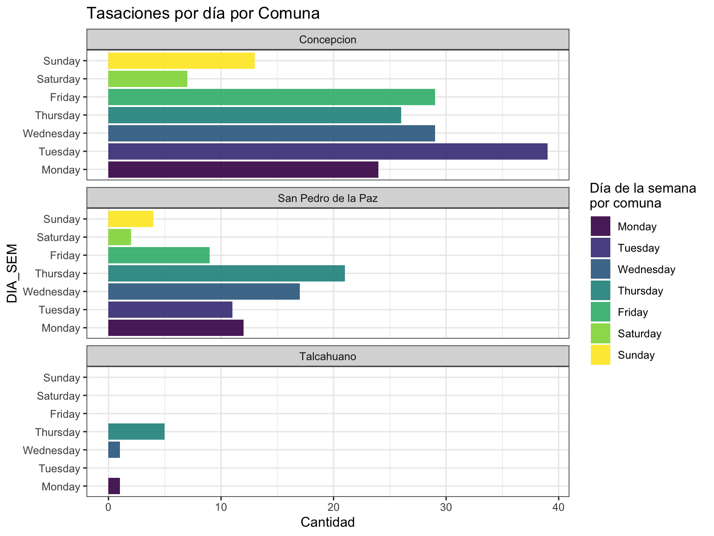
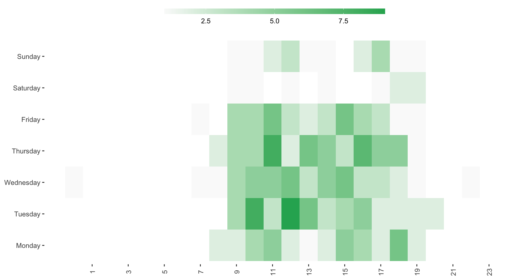

library(dplyr)
tasacion <- read.csv("data/tasaciones//base_250.csv")
head(tasacion)Appendix C — Datos temporales
Manipulación de datos temporales haciendo uso de la librería lubridate

C.1 Lectura de archivo con tasaciones
Tabla de Tasaciones
| X | Fecha_Tasacion | Nombre_Calle | Numeracion | Comuna | Region | Tipo | Ano_Construccion | M2_Terreno | M2_Construccion | Tasacion_UF |
|---|---|---|---|---|---|---|---|---|---|---|
| 1 | 2015-08-01T10:58:00Z | GALVARINO | 886 | Concepcion | Region VIII | Departamento | 2014 | NULL | 45.04 | 2182 |
| 2 | 2015-12-01T10:52:00Z | NAHUELBUTA | 2255 | San Pedro de la Paz | Region VIII | Departamento | 2007 | NULL | 47.35 | 1944 |
| 3 | 2015-01-16T15:34:00Z | AVENIDA JORGE ALESSANDRI RODRIGUEZ | 450 | Concepcion | Region VIII | Departamento | 2013 | NULL | 43.71 | 1884 |
| 4 | 2015-01-20T10:27:00Z | AVENIDA JORGE ALESSANDRI | 450 | Concepcion | Region VIII | Departamento | 2015 | NULL | 53.45 | 2421 |
| 5 | 2015-01-23T16:06:00Z | AVENIDA CHACABUCO | 333 | Concepcion | Region VIII | Departamento | 2008 | NULL | 54.13 | 2421 |
| 6 | 2015-01-27T10:06:00Z | AVENIDA ANDALUE | 2737 | San Pedro de la Paz | Region VIII | Departamento | 2006 | NULL | 112.45 | 3849 |
C.2 Instalar lubridate
# Instalar librería
install.packages("lubridate")
# Cargar Librería
library(lubridate)C.3 Manipulación de datos temporales
Convertir variables variable fecha, de texto a date
tasacion <- tasacion_original %>%
mutate(Fecha_Tasacion = ymd_hms(Fecha_Tasacion))| X | Fecha_Tasacion | Nombre_Calle | Numeracion | Comuna | Region | Tipo | Ano_Construccion | M2_Terreno | M2_Construccion | Tasacion_UF |
|---|---|---|---|---|---|---|---|---|---|---|
| 1 | 2015-08-01 10:58:00 | GALVARINO | 886 | Concepcion | Region VIII | Departamento | 2014 | NULL | 45.04 | 2182 |
| 2 | 2015-12-01 10:52:00 | NAHUELBUTA | 2255 | San Pedro de la Paz | Region VIII | Departamento | 2007 | NULL | 47.35 | 1944 |
| 3 | 2015-01-16 15:34:00 | AVENIDA JORGE ALESSANDRI RODRIGUEZ | 450 | Concepcion | Region VIII | Departamento | 2013 | NULL | 43.71 | 1884 |
| 4 | 2015-01-20 10:27:00 | AVENIDA JORGE ALESSANDRI | 450 | Concepcion | Region VIII | Departamento | 2015 | NULL | 53.45 | 2421 |
| 5 | 2015-01-23 16:06:00 | AVENIDA CHACABUCO | 333 | Concepcion | Region VIII | Departamento | 2008 | NULL | 54.13 | 2421 |
| 6 | 2015-01-27 10:06:00 | AVENIDA ANDALUE | 2737 | San Pedro de la Paz | Region VIII | Departamento | 2006 | NULL | 112.45 | 3849 |
C.4 Agregar Variables Temporales
tasacion <- tasacion %>%
mutate(DIA = day(Fecha_Tasacion),
MES = month(Fecha_Tasacion),
AÑO = year(Fecha_Tasacion),
DIA_SEM = wday(Fecha_Tasacion,
label = TRUE, abbr = FALSE,
week_start = getOption("lubridate.week.start", 1),
locale = Sys.getlocale("LC_TIME")),
SEMANA = week(Fecha_Tasacion)) %>%
mutate(HORA = hour(Fecha_Tasacion),
MINUTO = minute(Fecha_Tasacion)) C.5 Actividades de Resumen y Gráficos
Actividad:
Contar la cantidad de tasaciones que se realizaron por día semana y genere un gráfico

Actividad:
Contar la cantidad de tasaciones que se realizaron por mes y genere un gráfico

Gráficos de Día Semana por Comuna
tas_day <- tasacion %>%
group_by(DIA_SEM, Comuna) %>%
summarise(Cantidad = n(), .groups = "keep")
nombre_plot <- "Tasaciones por día"
gdc <- ggplot() +
geom_bar(data = tas_day, aes(x = DIA_SEM, y = Cantidad, group = 1,
fill=DIA_SEM),
stat = "identity",
alpha = 0.9, size = 0.5)+
scale_fill_viridis_d()+
ggtitle(lab = nombre_plot )+
labs(fill = "Día Semana")+
facet_wrap(~Comuna, nrow = 3)+ # Genera el mismo gráfico por comuna
theme_bw()
gdc
coord_flip()+
tas_day <- tasacion %>%
group_by(DIA_SEM, Comuna) %>%
summarise(Cantidad = n(), .groups = "keep")
nombre_plot <- "Tasaciones por día por Comuna"
gdc_flip <- ggplot() +
geom_bar(data = tas_day, aes(x = DIA_SEM, y = Cantidad, group = 1,
fill=DIA_SEM),
stat = "identity",
alpha = 0.9, size = 0.5)+
scale_fill_viridis_d()+
ggtitle(lab = nombre_plot )+
labs(fill = "Día de la semana \npor comuna")+
facet_wrap(~Comuna, nrow = 3)+
coord_flip()+
theme_bw()
gdc_flip
C.6 Gráficos en 2 Dimensiones
t_h_semana <- tasacion %>%
group_by( DIA_SEM, HORA) %>%
summarize(count = n(), .groups = "keep")
nombre_plot <- "Hora Día"
plot <- ggplot(t_h_semana, aes(x = HORA, y = DIA_SEM, fill = count)) +
scale_x_continuous(breaks =seq(1,24, 2))+
geom_tile() +
theme(axis.text.x = element_text(angle = 90, vjust = 0.6),
axis.title.x=element_blank(), axis.title.y=element_blank(),
panel.grid.major = element_line(colour = "NA"),
panel.grid.minor = element_line(colour = "NA"),
plot.title = element_text(hjust = 0.5, size = rel(1)),
plot.subtitle = element_text(hjust = 0.5, size = rel(1)),
panel.background = element_rect(fill = "NA", colour = "NA", linewidth = 1),
legend.title = element_blank(), legend.position="top",
legend.direction="horizontal", legend.key.width=unit(2, "cm"),
legend.key.height=unit(0.25, "cm"), legend.spacing=unit(-0.5,"cm"),
panel.spacing=element_blank()) +
labs(nombre_plot) +
scale_fill_gradient(low = "gray98", high = "#27AE60")
plotC.7

Guardar un Gráfico
nombre_plot <- "Tasaciones_dia_comuna"
nombre_imagen <- paste0("../data/graficos/",gsub(" ", "_", nombre_plot) ,".jpg")
ggplot2::ggsave(filename = nombre_imagen, plot = gdc, height = 7, width = 9)C.8 Gráficos Dinámicos
Instalar librería plotly
# install.packages("plotly")
suppressPackageStartupMessages(library(plotly))Gráfico de Tasaciones por mes por Mes
library(ggplot2)
library(scales)
tas_mes <- tasacion %>%
group_by(MES) %>%
summarise(Cantidad = n(), .groups = "keep")%>%
mutate(MES = sprintf("%02d", MES))
nombre_plot <- "Tasaciones por Mes"
gm <- ggplot() +
geom_bar(data = tas_mes, aes(x = MES, y = Cantidad, fill = MES),
stat = "identity",
alpha = 0.9, size = 0.5)+
scale_fill_viridis_d()+
ggtitle(lab = nombre_plot )+
labs(fill = "MES")+
theme_bw()
ggplotly(gm)